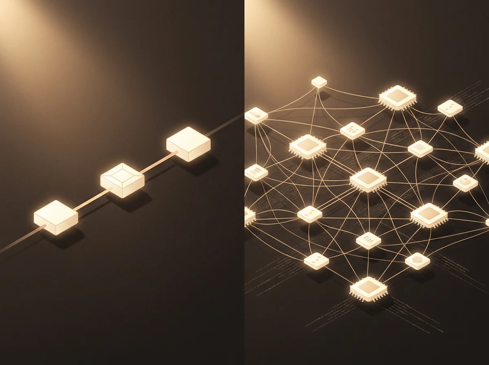

Perché il team commerciale perde 2 ore al giorno su email ripetitive.
Se hai un team di 4-6 persone che gestisce richieste in entrata, il problema non è che lavorano poco. È che ogni giorno scrivono dieci varianti della stessa email. La cosa interessante è che la maggior parte delle aziende non sa di quanto tempo sta parlando. Vediamo i numeri, e perché le soluzioni più ovvie non risolvono il problema fino in fondo.

Cosa sta succedendo davvero nelle caselle
Una commerciale media di una PMI italiana riceve tra 80 e 140 email al giorno. Una quota significativa, intorno al 60-70%, rientra in pochi pattern ricorrenti: richieste di disponibilità, conferme di appuntamento, domande su prezzo o tempi, richieste documenti, follow-up su preventivi inviati la settimana scorsa. La differenza tra una e l'altra è quasi sempre il nome, la data o un piccolo dettaglio del cliente.
Su un team di 5 persone, sono 400-700 email al giorno. Di queste, 240-500 sono versioni leggermente diverse della stessa cosa. Tempo medio di risposta osservato: 2-4 minuti a email. Fai il conto: tra le 8 e le 13 ore di lavoro al giorno del team passano lì.
La sensazione, vista da dentro, è di un lavoro intenso. Vista dai numeri, è una macchina che brucia ore qualificate per produrre risposte che potrebbe scrivere chiunque, anche tre volte di fila. È il caso più chiaro in cui l'effort percepito è alto e il valore prodotto è basso.
Perché HubSpot Sequences o Zapier non bastano
La prima reazione naturale è: "installiamo HubSpot Sequences". O "colleghiamo Zapier". Entrambe sono buone soluzioni per una parte del problema. Funzionano benissimo sui casi prevedibili: cadenze fisse di follow-up, conferme automatiche, email di benvenuto, sequenze post-evento.
Quello che non fanno è gestire le email che richiedono di leggere il contesto. Una richiesta del tipo "per il preventivo di marzo che mi avete mandato, in realtà mi serve la variante senza posa, mi puoi rifare il numero?" contiene tre informazioni che una sequenza non sa leggere: a quale preventivo si riferisce, quale variante esattamente, cosa cambia nel calcolo.
La maggior parte delle email commerciali è di questo tipo. Le sequenze coprono il 30-40% del traffico. Il resto continua a essere scritto a mano dal team, una alla volta, copiando da email vecchie e adattando manualmente.

Cosa serve davvero per chiudere il gap
La categoria di soluzione che serve si chiama agente AI. Non è un'evoluzione di Zapier, è una cosa diversa. La differenza chiave non è "fa le stesse cose ma meglio". È che legge il contesto: il thread email precedente, il record del cliente nel CRM, la cronologia dei preventivi, e produce una risposta che tiene conto di tutto.
In termini operativi, un agente per email commerciali ha tre componenti fondamentali: una parte che capisce di cosa parla l'email in arrivo, una parte che recupera il contesto giusto dal CRM e dai documenti aziendali, una parte che genera una risposta nel tono dell'azienda e nei termini concordati con il cliente specifico. Configurato bene, può rispondere autonomamente alle email a basso rischio e preparare una bozza pronta da rivedere per quelle a rischio alto.
La configurazione di queste tre componenti dipende dai sistemi che l'azienda usa già, dalla tipologia di clienti, dalla soglia di autonomia che si vuole concedere. Non è un setup che si fa da soli in un pomeriggio. Ma il principio è chiaro, e una volta capito il principio, il passo successivo è valutare se vale la pena nel proprio caso specifico.
Studio commercialista, 12 dipendenti
Uno studio in Umbria, 12 dipendenti, gestione clientela PMI locale. Prima dell'intervento, due dipendenti dedicate solo a smistare email e rispondere a richieste documentali di routine, per circa 90 minuti al giorno ciascuna. 3 ore al giorno × 5 giorni × 4 settimane = 60 ore al mese bruciate su un'attività a basso valore.
Dopo l'introduzione di un agente custom integrato con la loro casella e con il loro gestionale, il tempo speso sulle stesse email è sceso a circa 25 minuti al giorno complessivi, dedicati alla revisione delle bozze generate dall'agente per i casi sensibili. Riduzione: dell'85%. Le due dipendenti non sono state sostituite: sono state spostate su attività che lo studio non riusciva a coprire prima (assistenza fiscale proattiva ai clienti chiave).
Non tutti i casi vanno così bene. Per studi più piccoli, sotto i 5 dipendenti, spesso il ROI è marginale e meglio fermarsi alle sequenze standard. La soglia in cui l'investimento inizia ad avere senso, dai nostri numeri, è intorno alle 200 email/giorno gestite manualmente dal team.
Quando ha senso costruire qualcosa di custom
| Hai questo | Conviene |
|---|---|
| Meno di 100 email/giorno gestite dal team, sequenze già attive | Fermati lì. Custom non vale il costo. |
| 100-200 email/giorno, quasi tutte varianti dello stesso pattern | Plug-in di FAQ automatico nel CRM basta. €30-80/mese. |
| 200+ email/giorno con contenuto contestuale, integrato con CRM e gestionale | Agente custom ha ROI in 3-6 mesi. |
| Team che parla di "non ce la facciamo" da almeno 6 mesi e l'azienda sta crescendo | Agente custom: il problema si aggrava prima che assumere risolva. |
Prossimo passo
Vuoi capire dove sta il tuo caso?
Apri K-BOT e in 5 minuti ti diciamo se il tuo team è sotto soglia (basta una sequenza), in zona grigia (vale provare uno strumento off-the-shelf), o in zona dove un agente custom ha senso. Gratuito.
Apri K-BOT →Domande frequenti
Quanto realmente impatta il tempo perso su email ripetitive?
Su un team commerciale di 5 persone che gestisce 200-300 email al giorno, la stima conservativa è 60-90 minuti al giorno per persona dedicati a email che si ripetono. Su base annua sono circa 1.500 ore di lavoro qualificato bruciate su un'attività a basso valore. Il costo opportunità è quasi sempre superiore al costo diretto: non è il tempo che paghi due volte, è il lavoro a valore alto che non viene fatto.
Le sequenze automatiche di HubSpot non bastano a risolvere il problema?
Le sequenze risolvono i casi prevedibili: cadenze fisse, follow-up identici, conferme. Non gestiscono email che richiedono lettura del contesto e una risposta contestuale a domande variabili. Restano il 60-70% delle email commerciali in entrata. Ha senso continuare a usare le sequenze per quello che fanno bene e aggiungere un layer sopra per il resto.
Un agente AI può davvero rispondere senza supervisione?
Per email a basso rischio (richieste di informazioni, FAQ, conferme appuntamento) sì. Per email sensibili (preventivi, negoziazioni, reclami) lavora in modalità bozza: prepara la risposta, un umano la rivede e la invia. La soglia di autonomia si calibra per categoria di email durante il setup iniziale e si aggiusta dopo le prime 2-3 settimane sulla base di ciò che si osserva.